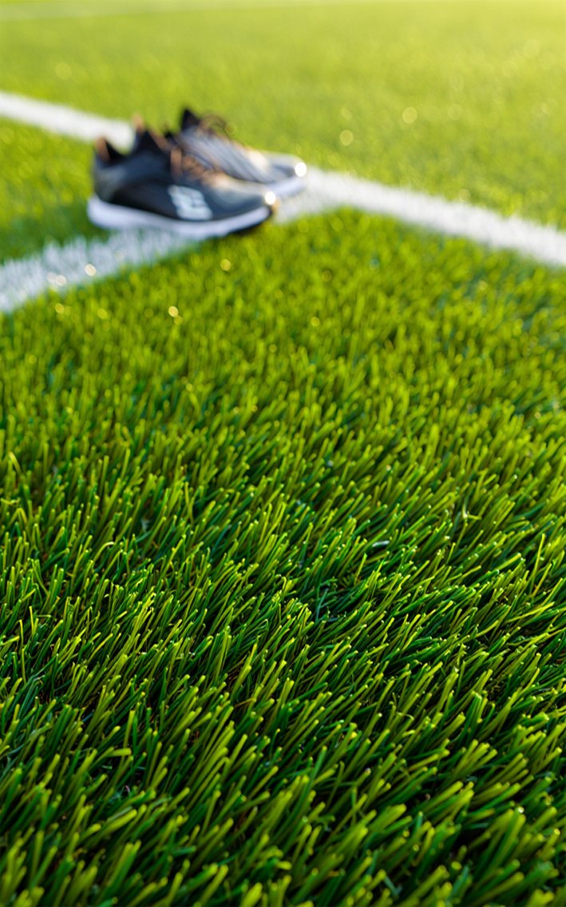
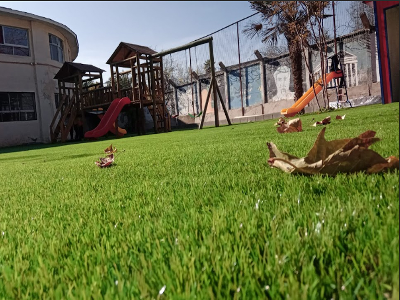
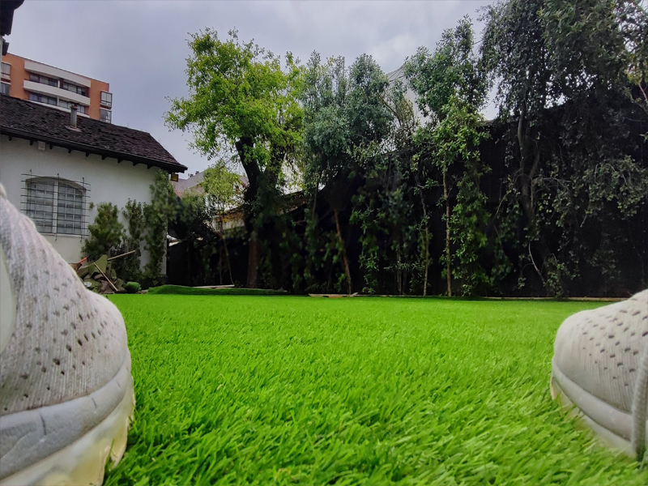
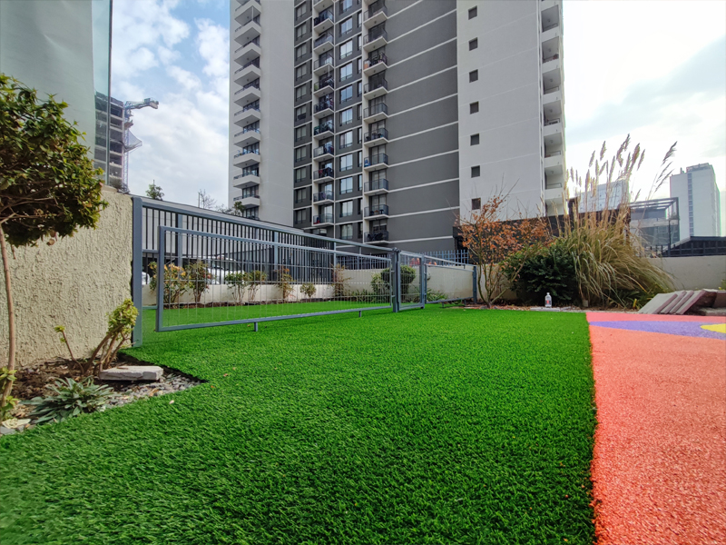
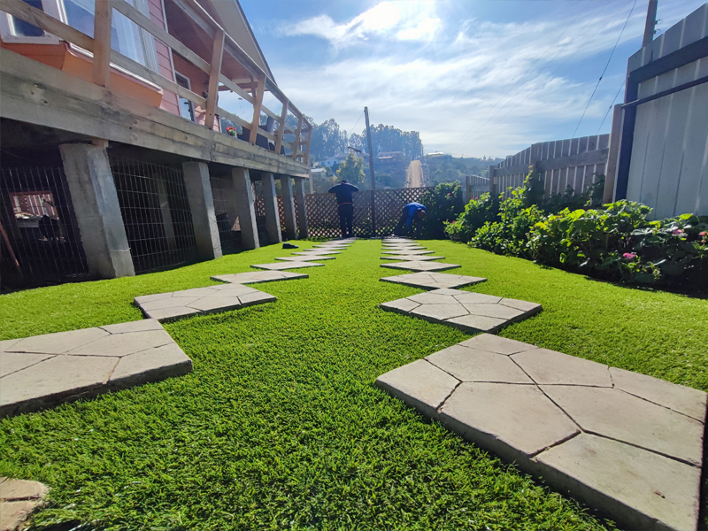
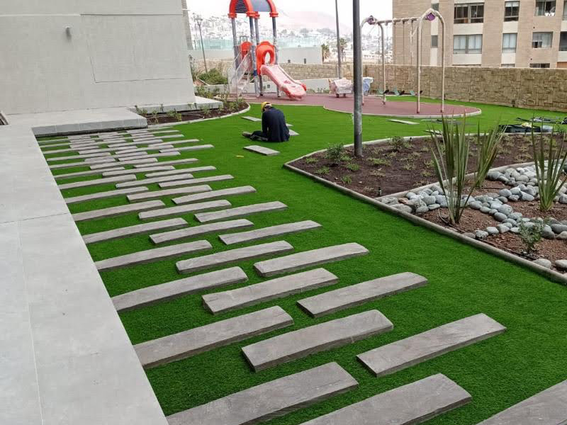
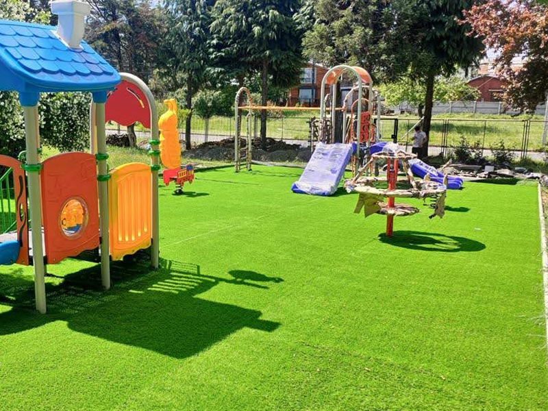
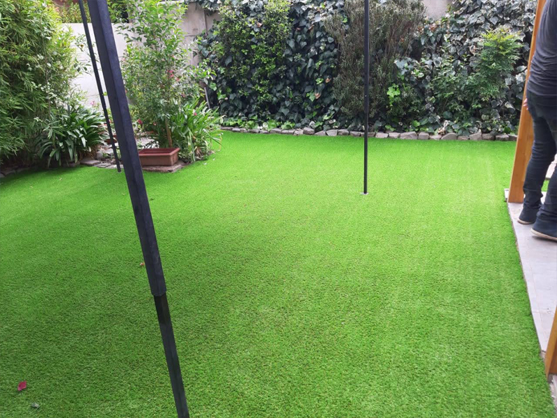
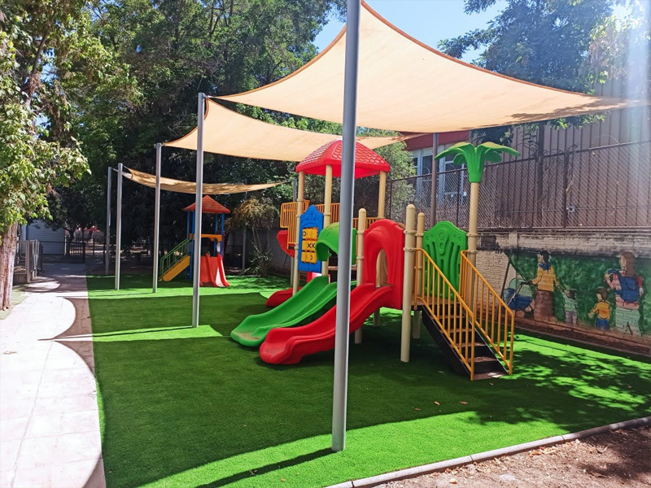

Áreas Verdes · MAMKAM
Pasto Sintético Deportivo en Santiago
Canchas de Fútbol con Certificación FIFA — Instalación Profesional en Región Metropolitana

Certificación FIFA · 50mm¿Por qué elegir pasto sintético deportivo FIFA para tu cancha en Santiago?
El pasto sintético deportivo de MAMKAM con certificación FIFA es la solución profesional para canchas de fútbol en Santiago. Fibra monofilamento PE de 50mm, alta densidad de puntadas, sistema de drenaje superior a 60 L/min/m² y resistencia al uso intensivo garantizan rendimiento deportivo de nivel internacional.
Cotizar sin costoSin riego
Ideal para zonas con restricciones de agua.
Sin mantención
Verde perfecto todo el año.
Resistente UV
Conserva el color bajo el sol de Santiago.
Seguro
Sin químicos ni barro. Apto para niños.
Ficha técnica
Especificaciones técnicas
| Altura de fibra | 50 mm (+/- 1 mm) |
| Tipo de fibra | Monofilamento recto con nervadura central en forma de diamante |
| Densidad | 9.000 a 11.000 puntadas/m² |
| Peso de fibra | Aprox. 1.200 – 1.400 gr/m² |
| Composición | Polietileno (PE) de alta calidad con estabilización UV |
| Base primaria | Doble capa de polipropileno (PP) termosoldado |
| Drenaje | ≥ 60 litros/min/m² |
| Certificación | FIFA Quality / FIFA Quality Pro |
| Relleno recomendado | Arena sílica lavada + caucho granulado SBR o TPE |
| Durabilidad | 8 a 12 años según uso e intensidad |

Proyectos realizados
Nuestro trabajo en Santiago





Versatilidad
¿Dónde se instala el pasto sintético deportivo?
El pasto sintético deportivo se instala en canchas de fútbol, centros deportivos y colegios en Santiago y la Región Metropolitana, incluyendo comunas como Maipú, La Florida, Pudahuel, Ñuñoa, Las Condes, Vitacura, Peñalolén, San Bernardo, Buin y Talagante.
Canchas de fútbol
Canchas profesionales y semiprofesionales con certificación FIFA.
Colegios y universidades
Canchas deportivas de alto tránsito para uso intensivo diario.
Centros deportivos
Instalaciones municipales y privadas de fútbol en toda la RM.
Multicanchas
Superficies deportivas para múltiples disciplinas.
Todo Chile
Instalamos desde Arica a Punta Arenas con el mismo estándar.
Resolvemos tus dudas
Preguntas frecuentes sobre pasto sintético deportivo en Santiago

Dónde instalamos
Instalamos canchas de pasto sintético en toda la Región Metropolitana
MAMKAM realiza instalaciones de pasto sintético deportivo FIFA en Santiago y comunas aledañas. Coordinamos una visita sin costo para evaluar tu proyecto y entregarte un presupuesto detallado.
Coordinar visita sin costo
Más productos MAMKAM